O que o Manual vai fazer
Entenda como o método atua no seu organismo para reverter a sobrecarga de gordura e devolver a vitalidade natural do seu fígado passo a passo.

O processo de recuperação do seu fígado acontece em um ciclo sequencial claro, sem loucuras ou dietas restritivas que estressam o organismo:
Tudo começa quando você interrompe a sobrecarga constante de toxinas que deixa seu fígado inflamado, inchado e exausto. Ao ter em mãos o Manual do Fígado Magro, você passa a seguir uma rotina objetiva com hábitos reais: alimentação saborosa e equilibrada, redução inteligente do açúcar refinado, menos gorduras inflamatórias e inclusão de alimentos naturais e bebidas bioativas no dia a dia.
O resultado desse ciclo é a regeneração celular profunda: o inchaço abdominal diminui, o peso na digestão desaparece e seu fígado volta a trabalhar com saúde, energia e vitalidade renovada.

Um Ecossistema Completo de Desintoxicação
Tudo estruturado passo a passo, direto ao ponto. Cinco guias independentes e integrados que cobrem cada momento do seu dia:


1º Café da Manhã
Receitas rápidas que ativam a queima matinal sem picos de glicose.
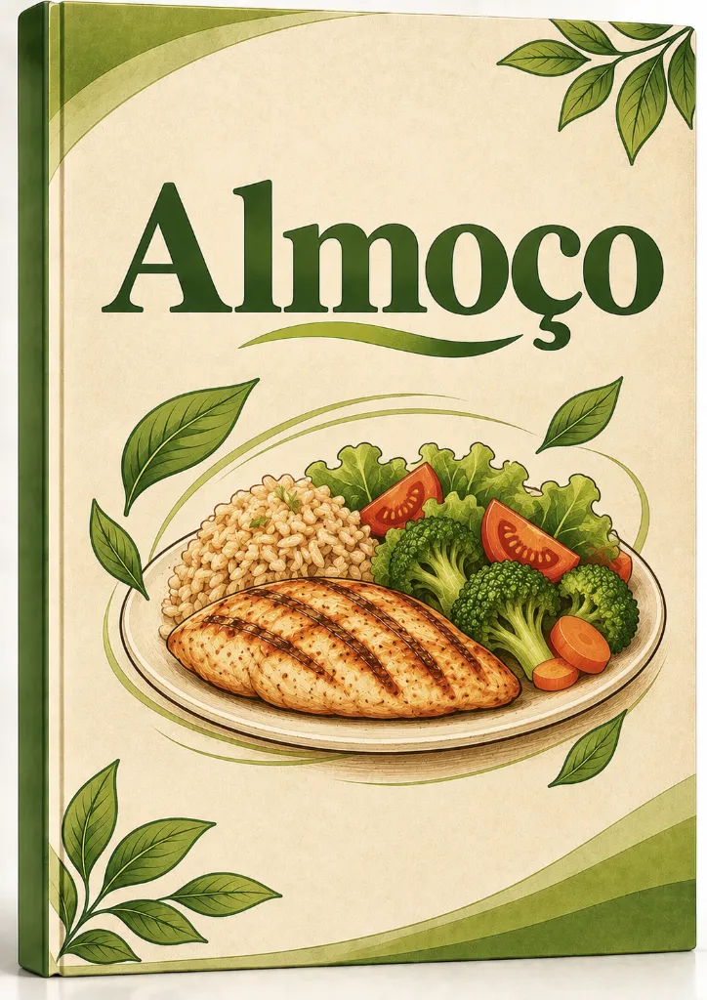
2º Almoço
Pratos que aceleram a digestão e barram a gordura visceral.
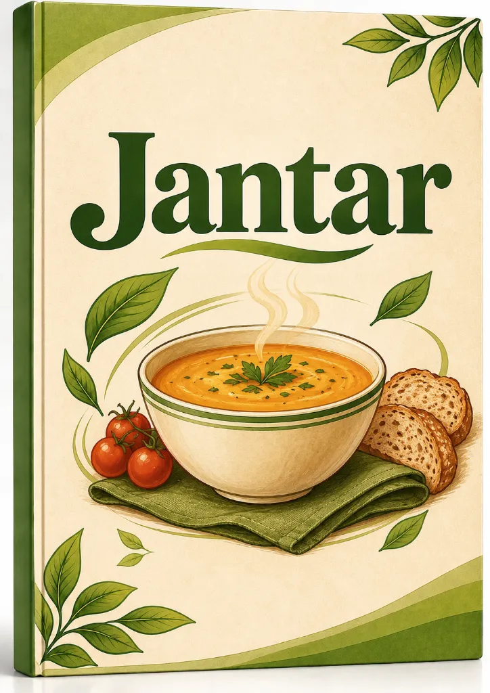
3º Janta Leve
Receitas leves para dormir sem refluxo e regenerar o fígado.

4º Exercícios
Treinos de 10 a 15 min de baixo impacto para fazer na sala.

5º Bebidas Detox
Chás e shots metabólicos para eliminar toxinas acumuladas.
Veja Como as Receitas São Por Dentro
Páginas reais do material que você vai receber no celular. Tudo ilustrado passo a passo, com ingredientes baratos e preparo de 5 a 20 minutos:
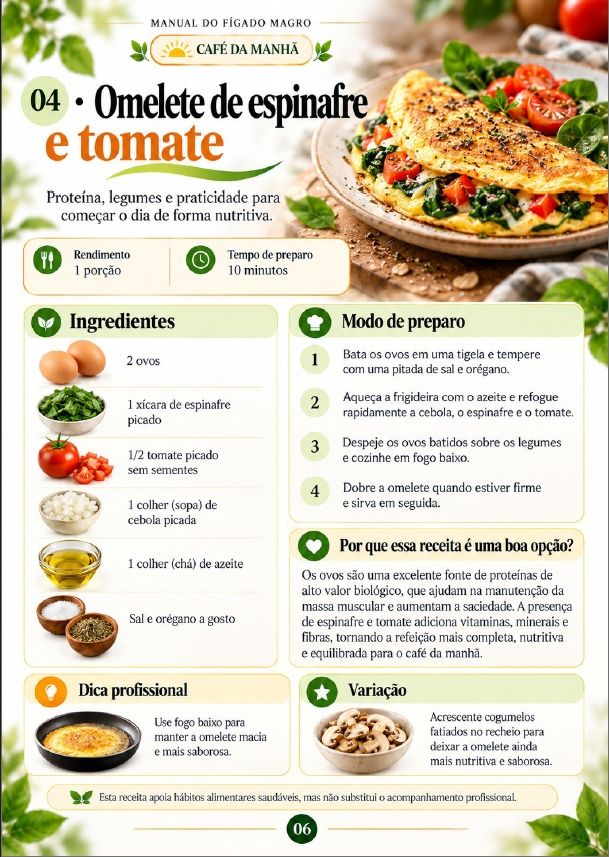
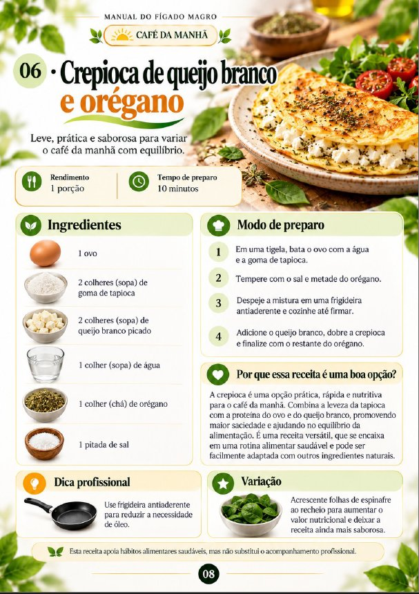
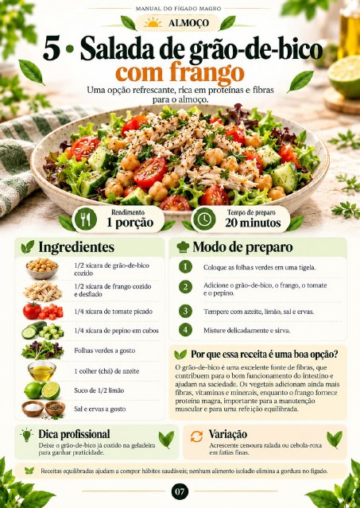
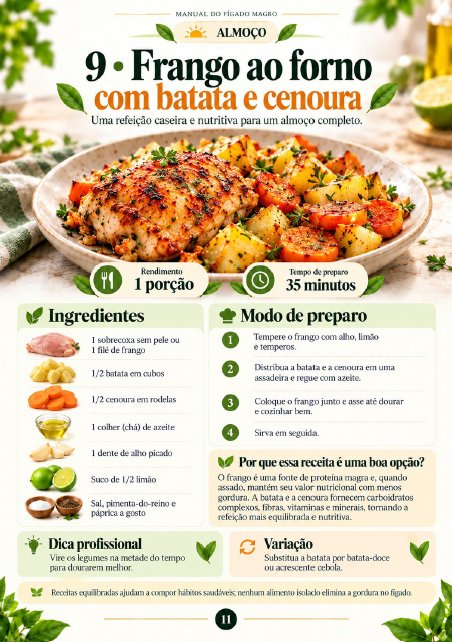
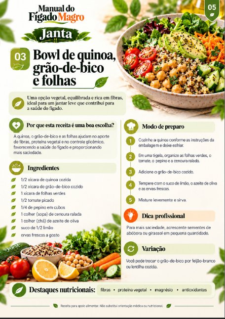
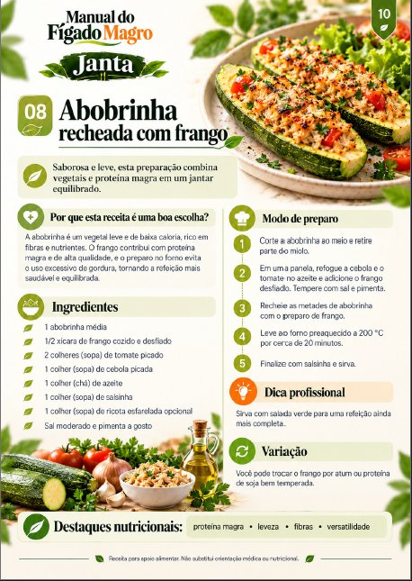
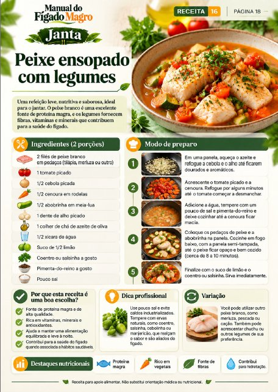
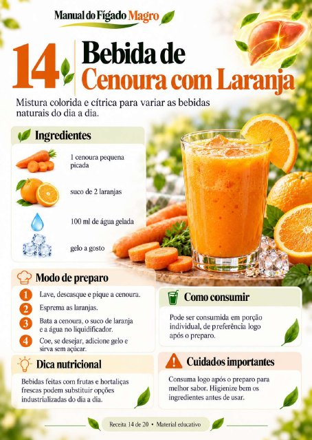
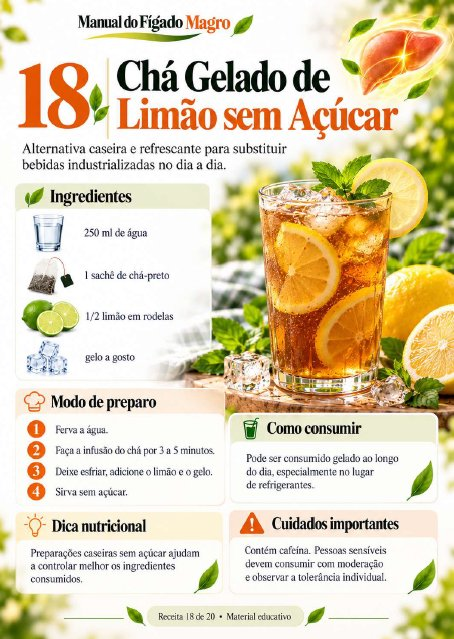
Sorriso de quem teve resultado
Pessoas reais que derreteram a gordura no fígado e se sentem bem novamente:
 Aluno Verificado ✓
Aluno Verificado ✓
“Eu acordava todo dia com a boca amarga, peso no estômago e sem disposição para nada. Quando comecei a seguir as receitas do Guia de Café da Manhã, em menos de duas semanas minha energia voltou e o amargor sumiu. No ultrassom recente, o médico confirmou: o fígado desinflamou!”
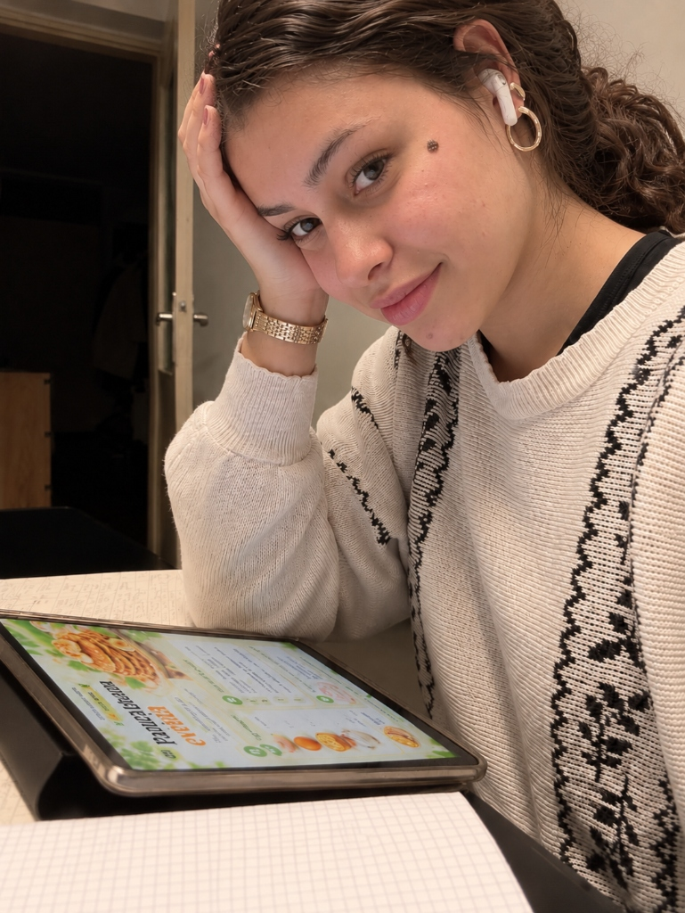
Aluna Verificada ✓“Por trabalhar o dia todo sentada, eu vivia cansada, inchada e comia muito mal. Adorei que o manual tem receitas fáceis que abro direto no tablet. A panqueca de aveia virou meu café preferido! Em 15 dias meu estômago desinflamou e recuperei o foco no trabalho.”
 Aluno Verificado ✓
Aluno Verificado ✓
“Eu não conseguia dormir direito por causa do refluxo e daquela queimação após o jantar. As receitas do Guia de Jantar foram perfeitas: pratos leves, saborosos e que desinflamam o organismo à noite. Hoje durmo a noite toda com tranquilidade e sem azia!”
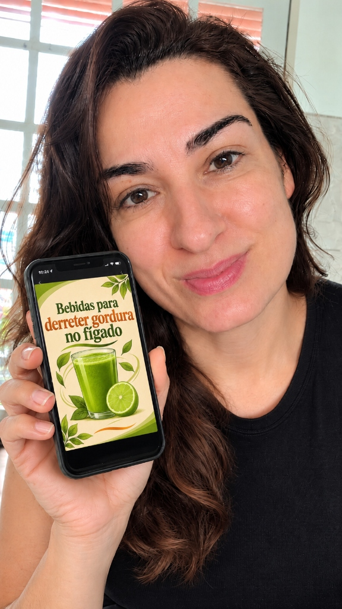
Aluna Verificada ✓“As bebidas detox do guia são maravilhosas! Troquei sucos de caixinha e refrigerantes pelos chás e infusões que derretem gordura. Em 10 dias a retenção líquida desapareceu e meu TGP, que estava muito elevado, normalizou totalmente no exame de sangue.”
 Aluna Verificada ✓
Aluna Verificada ✓
“Na correria entre filhos e trabalho, meu almoço era sempre um desastre e meu fígado foi para Grau 2 de esteatose. O Guia de Almoço salvou minha rotina: pratos deliciosos, rápidos e que não pesam na digestão. Minha barriga desinchou muito e perdi 4 kg sem sofrimento!”
3 Presentes Especiais Liberados Gratuitamente Hoje
Comprando hoje o Manual do Fígado Magro, você garante acesso completo a estes 3 guias complementares sem pagar nenhum centavo a mais:
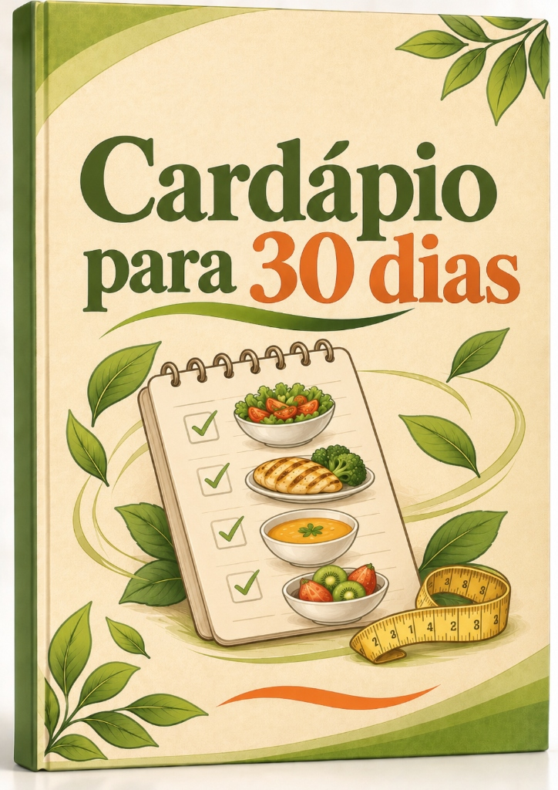
Cardápio para 30 Dias
Sobremesas Sem Açúcar

Guia Alimentos a Evitar
Depoimentos Espontâneos no WhatsApp
Conversas reais enviadas por alunos no dia a dia. Toque na imagem para ampliar em tela cheia:
“Minha gordura caiu de GRAU 2 pra leve em só 21 dias de manual!”

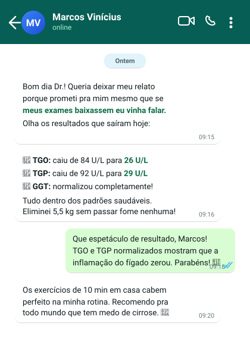
“TGO caiu de 84 pra 26 e TGP de 92 pra 29... Tudo dentro do normal!”


“Com 3 semanas minha digestão mudou 100% e desinchei 5kg!”
Tudo Pronto na Palma da Sua Mão
Veja como é rápido, seguro e descomplicado receber o seu acesso:
E-book Digital
Conteúdo direto ao ponto, organizado em PDF para ler e aplicar no mesmo dia.
Lê no Celular
Abre em qualquer smartphone (Android ou iPhone), tablet ou computador. Pode imprimir se preferir.
Acesso Imediato
Chega no seu e-mail e no seu WhatsApp assim que o pagamento for aprovado.
100% Natural
Sem remédios ou pílulas milagrosas. Apenas comida de verdade acessível de qualquer feira.
Cabe na palma da mão. E muda a saúde de todo o seu organismo.
Sem enrolação, feito especificamente para quem tem pouco tempo e precisa de resultados rápidos.

Você lê no intervalo do almoço, no transporte ou antes de dormir. O método é direto, sem enrolação, e foi feito para caber perfeitamente na rotina de quem tem pouco tempo e precisa de resultados reais.
Tudo fica disponível na tela do seu smartphone ou tablet, organizado em passos simples que você aplica no mesmo dia, sem livros pesados e sem complicações.
Quero derreter a gordura no fígado
Detalhes dos Bônus que Você Vai Receber
Veja exatamente tudo o que está incluso no pacote de hoje com a economia real de cada material:
Cardápio para 30 Dias
Planner alimentar completo organizado do 1º ao 30º dia. São 90 receitas equilibradas para café da manhã, almoço, janta e bebida do dia. Basta seguir a ordem sem precisar quebrar a cabeça com o que comer.
Sobremesas Sem Açúcar
Doces e sobremesas deliciosas criadas especificamente para quem tem gordura no fígado. Mate a vontade de comer doces sem causar picos de glicose e sem inflamar seus hepatócitos.
Bônus #3 • Lista Negra
Guia Alimentos a Evitar
A lista oculta dos alimentos comuns que parecem inofensivos mas sabotam seu fígado silenciosamente. Saiba exatamente quais itens evitar para destravar a queima de gordura visceral.
Pronto para derreter a gordura no fígado?
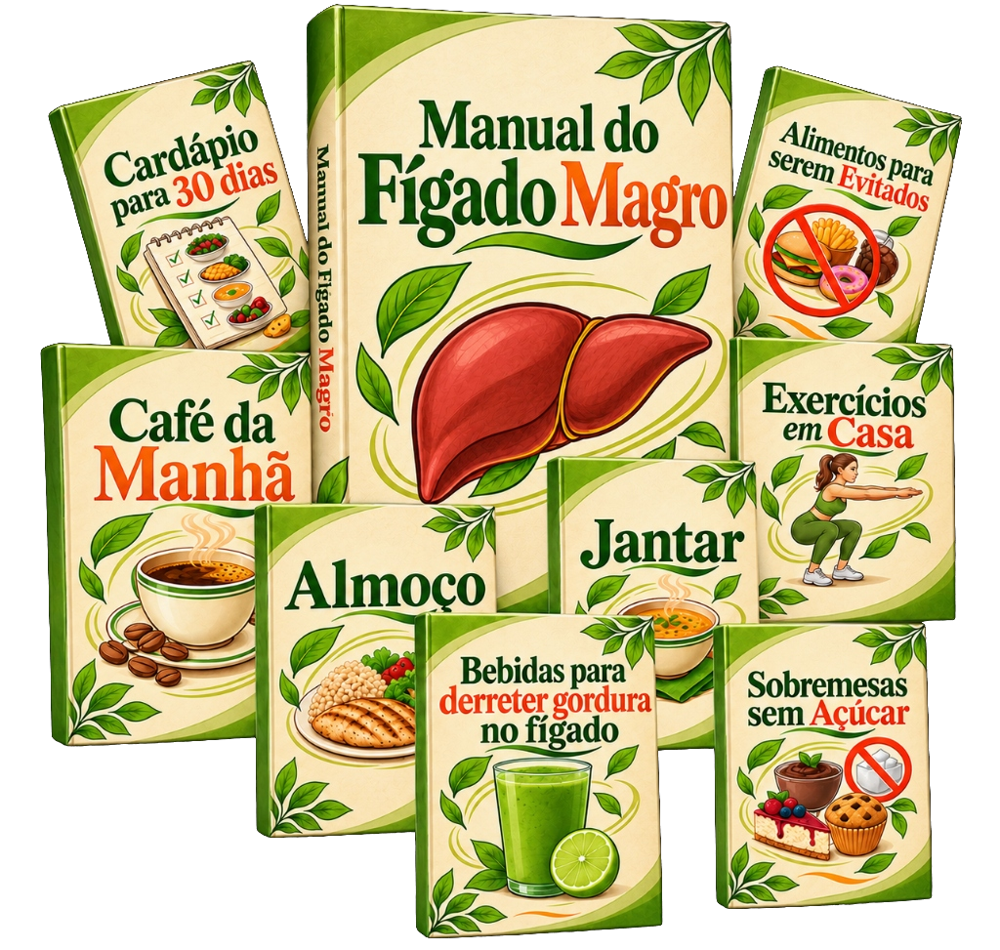
Garantia Incondicional de 7 Dias — Risco Zero
Você não assume risco nenhum. Experimente o Manual do Fígado Magro por 7 dias completos. Se não notar digestão mais leve, menos inchaço e muito mais disposição, basta nos enviar um e-mail e devolveremos 100% do seu dinheiro, sem burocracia e sem perguntas.
Resultados Que Se Encaixam no Seu Dia
Veja como é simples recomeçar e por que o método funciona mesmo na rotina mais corrida:
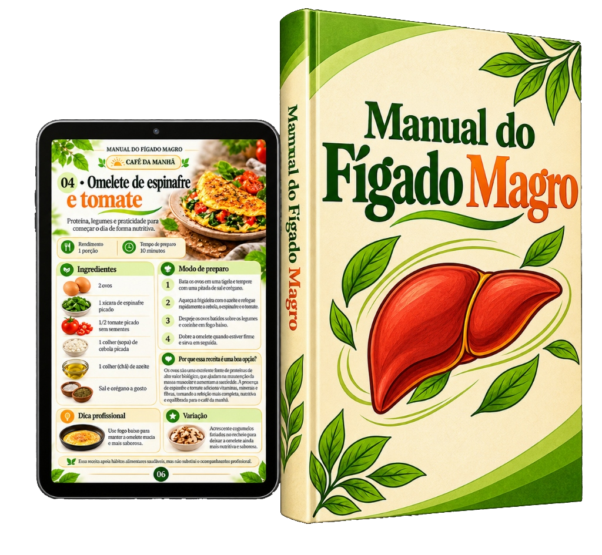
Escolha por onde recomeçar.
Substituições simples e saborosas que desinflamam o fígado logo ao acordar, sem passar fome.
Chás e bebidas metabólicas rápidas para cortar a azia, a digestão pesada e o cansaço do dia.
Receitas fáceis para dormir sem peso no estômago e ativar a queima noturna de gordura visceral.
O que ajudou na prática.
“Eu vivia com a barriga inchada, azia todo dia e um desânimo que não passava. Fiz as trocas do manual e em 2 semanas meu abdômen murchou 5 cm. Meu médico elogiou o resultado do meu ultrassom.”
“Comprei meio desconfiada, mas me surpreendi. É tudo bem explicado e dá pra colocar em prática sem complicação. Não precisei de nenhum remédio caro nem fazer dieta maluca.”
Dá pra adaptar à sua rotina.
- • Cabe no intervalo do trabalho, no ônibus ou antes de dormir.
- • Nos dias corridos, faça só o café ou a bebida desintoxicante do dia.
- • Pausou? Retome de onde parou, sem começar do zero.
Volte a ter o fígado saudável que seu corpo precisa.
Quero meu manual R$ 47,90Manual em PDF + 5 Guias Práticos + 3 Bônus • Garantia de 7 dias
Perguntas Frequentes
Tudo o que você precisa saber antes de iniciar sua jornada de regeneração hepática:
Você recebe acesso instantâneo ao e-book central Manual do Fígado Magro mais os 5 Manuais Práticos: 1º Café da Manhã Anti-Gordura, 2º Almoço Desintoxicante, 3º Janta Leve & Reparadora, 4º Exercícios para Fazer em Casa e 5º Bebidas para Derreter a Gordura no Fígado. Além disso, você leva os 3 bônus exclusivos: Cardápio para 30 Dias, Sobremesas Sem Açúcar e o Guia de Alimentos a Evitar.
Sim! Não usamos nenhum ingrediente caro, importado ou difícil de achar. São receitas pensadas para o bolso comum, com alimentos simples encontrados em qualquer feira livre ou supermercado de bairro.
Não! Os exercícios foram elaborados especificamente para serem feitos no chão da sala, sem pesos, sem esteira e sem mensalidade de academia. São sequências fáceis de 10 a 15 minutos que respeitam as suas articulações.
Sim! O método atua diretamente na raiz do acúmulo de gordura nos hepatócitos. Nos graus 1 e 2, os resultados costumam ser muito rápidos. No grau 3, o protocolo atua freando o avanço inflamatório e auxiliando na regeneração celular profunda.
A maioria dos alunos relata alívio imediato no inchaço da barriga, na azia e no cansaço logo na primeira semana de aplicação. Entre 21 e 30 dias, as taxas de exames como TGO e TGP e a redução de medidas na cintura costumam ser expressivas.
O acesso é imediato! Assim que o seu pagamento for confirmado (no PIX ou Cartão em menos de 1 minuto), você receberá um e-mail e uma mensagem no WhatsApp com o link para baixar todos os materiais em formato digital (PDF).
Você tem 7 dias completos de garantia incondicional de risco zero. Se dentro de 7 dias você achar que o conteúdo não é para você, basta nos enviar um e-mail e devolveremos 100% do seu dinheiro, sem questionamentos.